|
I) Intro / Les outils / Les bases
a) Présentation
Bonjour, moi c'est NeOwA, je vais essayer de vous initier au cracking, ce cour n'est que le n°1, et j'avoue, sera forcement un peut barbant, mais, c'est normal car on va apprendre a se servir d'outil, apprendre des rudiment d'asm etc. Les autre seront plus axé sur les protections, cd-check etc.
Bonne lecture
b) Les Outils
Le décompilateur :
C'est un programme qui décompile, c'est à dire, qu'il nous donne la source (en asm) d'un programme, et il donne aussi plein d'autre information très utiles
que nous verrons plus bas. Le Plus connu et le plus simple est Windasm (http://www.eed.usv.ro/~iulianc/lucrari/pa/WinDasm.zip)
Il marche comme ceci, après avoir decompiler un programme, cette fenêtre apparaît :
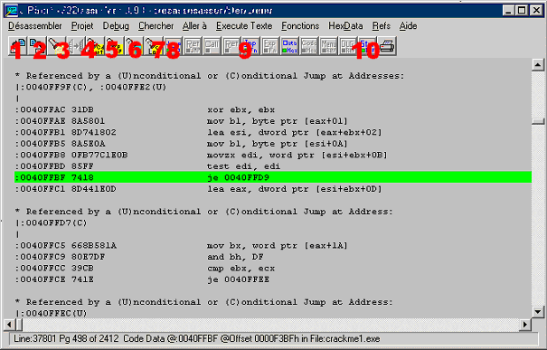
Appuyez sur ce bouton pour ouvrir un fichier à désassembler
Appuyez sur ce bouton pour sauver un fichier
Appuyez sur ce bouton pour faire une recherche dans le listing (listing = code)
Appuyez sur ce bouton pour aller au début du code
Appuyez sur ce bouton pour aller au point d'entrée du programme
Appuyez sur ce bouton pour aller à une page du listing (presque inutile)
Appuyez sur ce bouton pour aller a un emplacement du code (ex : dans la ligne qui est surlignée, le numéro d'emplacement du code est 0040ffbf
Appuyez sur ce bouton pour exécuter un saut (un jne, un je, un jmp, dont nous verrons la signification plus tard)
Appuyer sur ce bouton pour voir les fonction importée (par exemple, pour afficher un boite de dialogue, écrire quelque chose dans la base des registres)
LE PLUS IMPORTANT, il permet de voir les " String data référence " c'est a dire, des chaînes de caractères qui apparaissent dans le programme
L'éditeur hexadécimal :
C'est un programme pour éditer la source d'un programme, windasm nous fournit la source, et les emplacements à modifier et on les change avec l'éditeur hexadécimal.
Le plus connu est : Hexworkshop. (ftp://ftp.bpsoft.com/pub/hw32v410.exe)
Pas besoin de présentation particulière, il est très simple a utiliser, Ouvrez un fichier et
ARG !!!
Auuuussscourrr c coi sa ????
Tout les petits 814B0200EB068D8604020000DD008D4DF4DD5DF48B40088945FC, c'est l'hexadécimal tout les caractères sont remplacés par des numéros et des signes …
C'est sa qu'on va éditer … rassurez vous, c'est très simple, je m'explique, revenez au screen de windasm plus haut et on voit sur la ligne qui est surlignée avant " je …… " 7418
c'est ça qu'on va éditer mais comme un programme c'est très long, il peut y avoir plusieurs 7418 dedans et on va pas en prendre un au pif donc on va prendre, les chiffre avant
7418 et après, Attention, il ne s'agit pas de 0040FFBF (ces chiffres sont que pour windasm) mais de 85ff (ligne au dessus de je) et de 8d441e0d (ligne en dessous du je)
Bon voilà, on va d'abord utiliser que ces 2 la.
c) Le Saut conditionnel
Pour ceux qui font de la programmation, on peut le comparer à if, then, else
Un saut conditionnel marche comme ça :
si une condition est remplie ou non, le programme exécute la suite du programme sinon il affiche quelque chose, modifie une valeur ou autre chose.
Ex : si SERIAL= "15574124-456125-5487487" alors afficher " bravo " sinon afficher " looser "
Voici les valeur hexadécimale des jne (si ce n'est pas égale a) je (si c'est égale a).
JNE = 75xx ou 0F85xxx
JE = 74xx ou 0F84xxx
Reprenons notre exemple,
Si SERIAL= "15574124-456125-5487487" alors afficher " bravo " sinon afficher " looser "
Dans un crack, si je dois afficher bravo et que je ne connais pas le serial,
Je peux transformer un je en jne ou le contraire.
Quand on rentrera un mauvais serial, il nous mettra le bon message non ?
C'est ça le cracking, si vous avez compris ça, vous allez pouvoir cracker !!!
Maintenant, LE CRACK ! Bonne chance !
II) Le crack
Voilà, donc j'ai décider de vous faire cracker un crackme de challenge de espionet, le crackme n°1
Bon, donc d'abords, on le lance, on tape un serial bidon
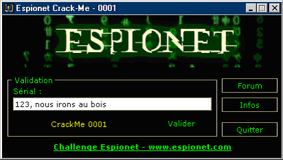
On clique sur valider et il nous affiche :
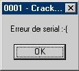
Donc, on ouvre windasm, on décompile le fichier EXE, et, on fait une recherche sur : "erreur de serial " il va nous trouver sa :
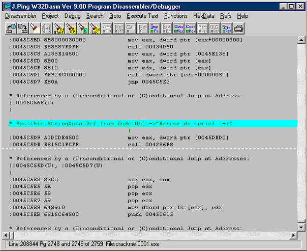
On regarde au dessus et on voit Referenced by (U)conditional or [C)onditional jump at. Address 0045c56f
Ce qu'il veut dire qu'il y a un je ou jne a la ligne 0045c56f qui nous amène ici (si on tape le mauvais n°), on clique donc sur le bouton n°7(pour aller un a emplacement du code).Et on va en 0045c56f (adresse du saut)
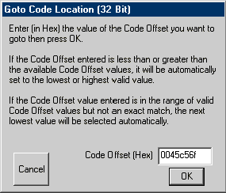
Et la, merveille de merveille on voit quoi ?
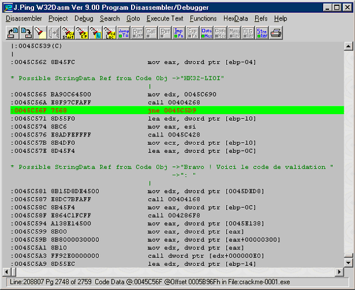
Donc, je vous explique, la ligne surligné décide si oui ou non, on continue et on affiche le bon message (Bravo ! voici le ….) ou si on saute a l'endroit où on était tout a l'heure.
Bon si on applique ce que je vous ait dit tout a l'heure (à propos des JE/JNE)
Si on transforme le jne en je, quand le serial sera mauvais, il continuera au lieu de sauter !
Donc pour sa on va utiliser l'éditeur hexadécimal
Donc , je vous rappel , que , ce qu'on voit avant jne XXXXXXXX est 7568 , donc si vous avez suivit tout a l'heure ( :-d ) vous allez vous dire : et si je change le 7568 par 7468, ce sera un je .
Bah voilà, pour ça on va utiliser l'éditeur hexadécimal.
Donc, on ouvre le programme et on a :
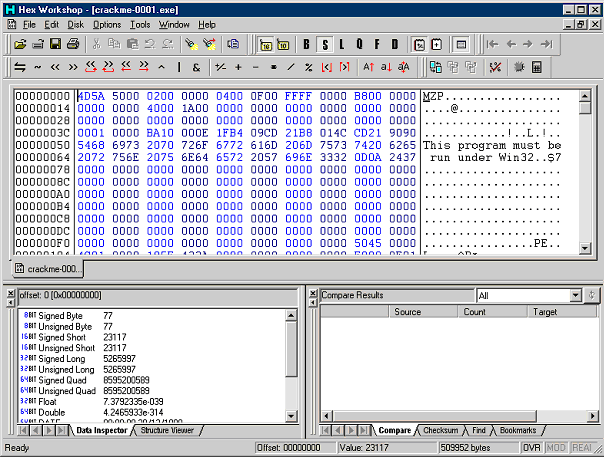
On fait une recherche (edit, find) on pourrait rechercher que 7568 mais y doit en avoir plusieurs, donc, on va prendre les nombres au dessus et en dessous
C'est a dire : e8f97cfaff (juste au dessus) et 8d55f0 (juste en dessous) donc on va rechercher : " e8f97cfaff75688d55f0 "
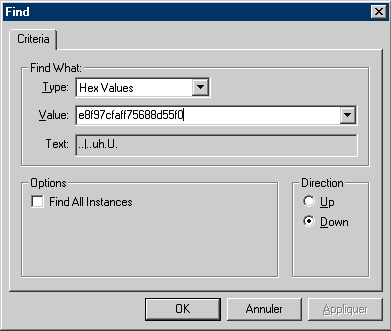
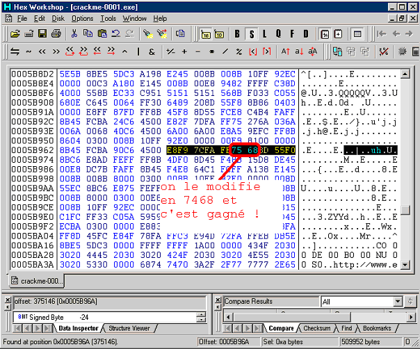
Donc, comme c'est marqué, on modifie 7568 en 7468, pour le modifier c'est tout con, on fous le curseur avant 75 et on tape 74
(rigolez pas on m'a poser cette question avant-hier : )maintenant, on fait enregistrer sous (save as) : " crackme-cracked.exe " vous le lancez vous tapez un serial bidon et :
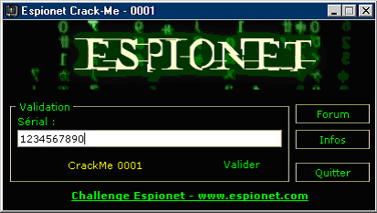
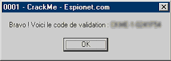
Voilà Vous avez réussi !!!
Vous avez trouvez sa difficile ?
Pour résumer, on a tout simplement modifié le programme pour que, quand le serial est mauvais, il affiche le bon message au lieu du mauvais !
Et la, si on a le bon serial, il affichera le mauvais message !
Voilà !!!
III) Outro
Bon soyons lucides, pas beaucoup de programme utilise cette protection. Vous pouvez pour vous entraînez, utiliser hebi, Start clean, ou des crackme pour débutant.
Mais, ça, c'est vraiment la base et c'est le plus chiant, le moins marrant dans les cours suivants, on verra
Sans doute les CD-Check (pour jouer sans le cd), patcher un programme.
Sinon désole mais ce cour je l'ai écrit assez rapidement avec les cours etc., mais vous verrez, les autres serons mieux.
1)Greetz
Juste 2/3 petit greetz a des personne qui mon bien aidez :
Jb, pour m'avoir aider a me lancer dans le cracking
Jello, Spic
2) Fin
Bah voilà, c'est finit, j'espère que je vous aie appris 2/3 trucs et que se n'était pas trop soûlant …
A++ et amusez vous bien !
----------------------------------------------------------------------------------------------------------------------------
----------------------------------------------------------------------------------------------------------------------------
Informations
Cet article a été écrit par NeOwA
|